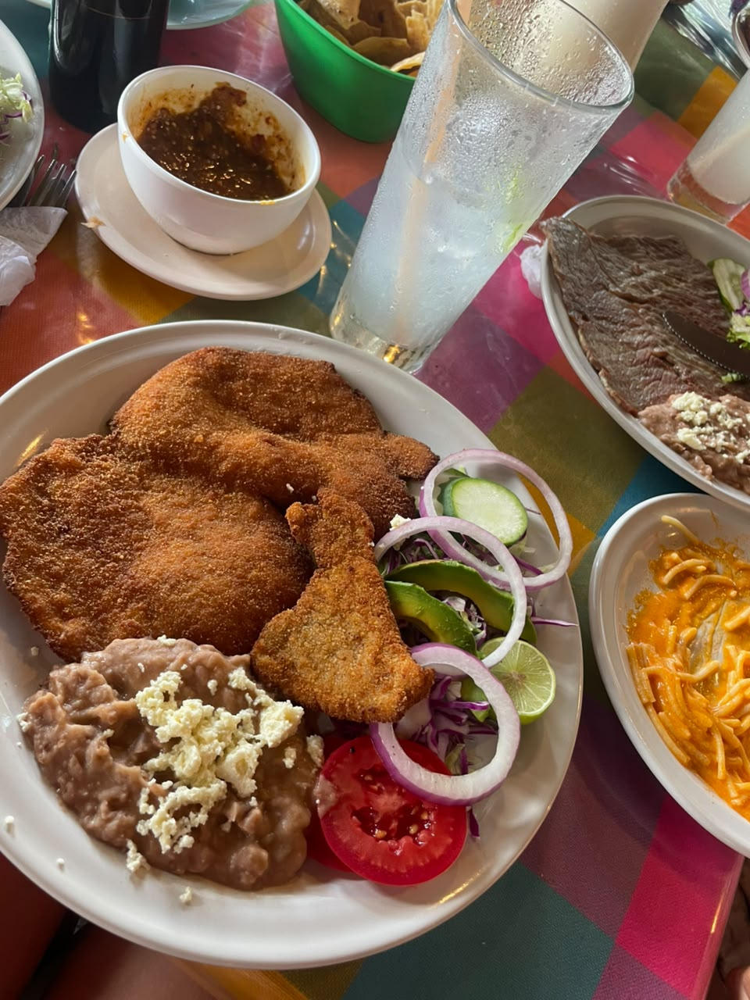
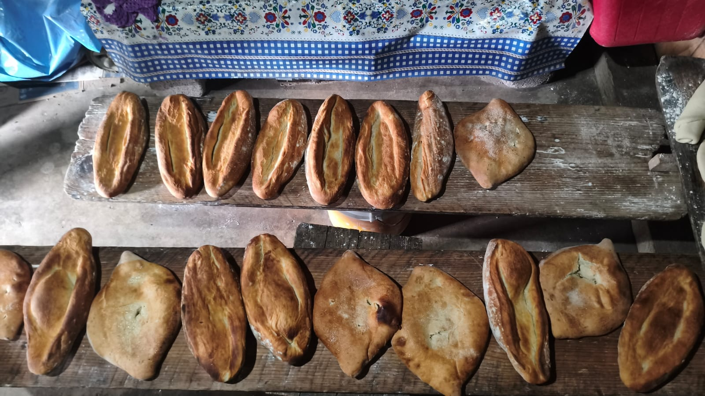
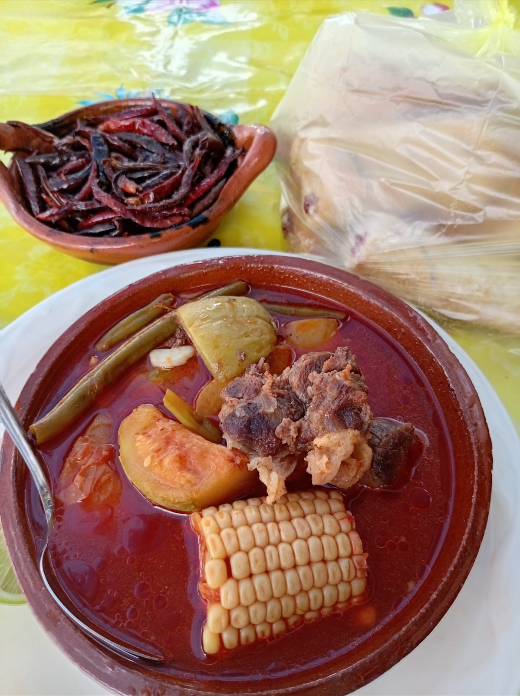
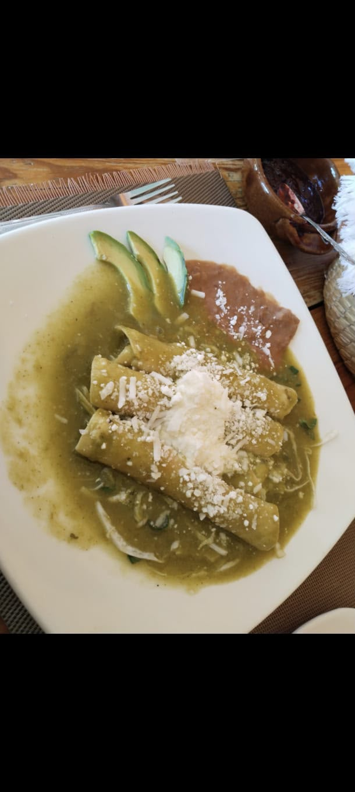

PLATILLO 1
"Tradicion que se sirve en cada bocado, con el autentico sabor de Mexico."

PLATILLO 2
"Sazón de casa en cada bocado, con arroz y frijoles de acompañamiento"

PLATILLO 3
"Un caldo intenso y humeante para los días que piden reconfort"

PLATILLO 4
"Antojito dorado y jugoso, con el sabor casero de la cocina de siempre."

PLATILLO 5
"Un festín de pozole con todos sus acompañamientos: lima, cebolla y tostadas"

PLATILLO 6
"Camarones en caldo rojo, un abrazo picante del mar."

PLATILLO 7
" Milanesas crujientes con frijoles, aguacate y ensalada fresca."

PLATILLO 8
"Salsa de molcajete recién molida, con el toque ahumado de la tradición."

PLATILLO 9
" Caldo de res con verduras, para reconfortar el alma."

PLATILLO 10
"Albondigas caseras como las de mamá."

PLATILLO 11
"Frijoles con lechuga y crema, sencillez que sabe a hogar."

PLATILLO 12
"Pasta y una salsa cremosa que se derrite en cada bocado"

PLATILLO 13
"Tradición molida a mano, con el toque picante que despierta el paladar"

PLATILLO 14
"Mole rojo con arroz y elote, un guiso profundo y sabroso. "

PLATILLO 15
"Birria en su cazuela de barro, con limón y mucho sabor."

PLATILLO 16
"El sabor de las fiestas, envuelto en masa suave y bañado en mole"

PLATILLO 17
"Crema de frijol o maíz, suave, cálida y tradicional."

PLATILLO 18
"Empanizado crujiente con aguacate, fresco y contundente."

PLATILLO 19
"Pozole rojo coronado con rábano, lechuga y cebolla."

PLATILLO 20
"Sopa de garbanzo en caldo rojo con cilantro, acompañada de tostadas."

PLATILLO 21
"Salsa de molcajete intensa, el alma picante de la mesa."

PLATILLO 22
" Rico pozolito bien acompañado con lechuga y crema que le da un sabor unico"

PLATILLO 23
"Chile en nogada con granada, la elegancia de la cocina mexicana."

PLATILLO 24
"Carne asada con salsa roja, un clásico en plato de flores."

PLATILLO 25
"Bistec casero con guarniciones, comida de domingo en familia."

PLATILLO 26
"Mole con arroz rojo y tortillas, un banquete de sabores profundos."

PLATILLO 27
"Crema espesa en cazuela de barro, suave y reconfortante."

PLATILLO 28
"Milanesa dorada con puré y espagueti verde, un plato completo."

PLATILLO 29
"Cebolla, cilantro y limón: los tacos que nunca fallan"

PLATILLO 30
"Pan recién salido del horno, dorado, crujiente y con aroma de casa."

PLATILLO 31
"Chicharrón rojo con cebolla morada y aguacate, crujiente y vibrante."

PLATILLO 32
"Un cocido de sabor profundo con chiles tostados para darle el toque final."

PLATILLO 33
"Base crujiente, frijoles cremosos y una lluvia de queso que lo corona todo."

PLATILLO 34
"Caldo rojo en cazuela de barro, picoso y humeante."

PLATILLO 35
"Enchiladas verdes bañadas en salsa y queso fresco, un clásico irresistible."

PLATILLO 36
"Platillo rojo relleno con cebolla morada y limón, una explosión de sabor."